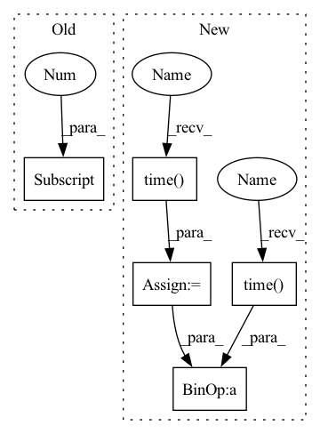

Pattern ID :34518

Before Change
optimizer.step()
epoch_losses.append(loss.item())
recall, precision = calc_recall_precision(batch["matches"][0], output.matches0[0].cpu().detach().numpy(), output.matches1[0].cpu().detach().numpy())
epoch_recalls.append(recall)
epoch_precisions.append(precision)
After Change
epoch_losses = []
epoch_recalls = []
epoch_precisions = []
t0 = time.time()
for i_batch, batch in enumerate(dataloader):
if args.max_batches is not None and i_batch >= args.max_batches:
break
optimizer.zero_grad()
color_input = batch["objects_colors"] if args.use_color else None
output = model(batch["objects_classes"], batch["objects_positions"], batch["hint_descriptions"], object_colors=color_input)
loss = criterion(output.P, batch["all_matches"])
// print(f"\t\t batch {i_batch} loss {loss.item(): 0.3f}")
loss.backward()
optimizer.step()
epoch_losses.append(loss.item())
recall, precision = calc_recall_precision(batch["matches"], output.matches0.cpu().detach().numpy(), output.matches1.cpu().detach().numpy())
epoch_recalls.append(recall)
epoch_precisions.append(precision)
return np.mean(epoch_losses), np.mean(epoch_recalls), np.mean(epoch_precisions), time.time()-t0
@torch.no_grad()
def val_epoch(model, dataloader, args):
In pattern: SUPERPATTERN
Frequency: 3
Non-data size: 5
Instances
Fragment ID: 99314095
Project Name: mako443/text2pos-cvpr2022
Commit Name: 8877bc8aa068a9dc4513014388e68b8c8162481e
Time: 2021-03-03
Author: manuel.kolmet@gmail.com
File Name: training/explicit_matching.py
M Class Name: AnonimousClass
N Class Name: AnonimousClass
M Method Name: train_epoch(3)
N Method Name: train_epoch(3)
M Parent Class:
N Parent Class:
M File Name: training/explicit_matching.py
N File Name: training/explicit_matching.py
M Start Line: 29
M End Line: 44
N Start Line: 27
N End Line: 51
'>
Before Change
print("scale: ", K.numpy(scale))
inference(param)
if len(times) > 1:
print("running time est.: ", (times[-1] - times[0]) / i)
except KeyboardInterrupt:
pass
After Change
seeds = K.implicit_randu([noc, m, n, 2])
time0 = time.time()
_, grads = vgloss(param, scale, seeds, xs, ys, pn)
time1 = time.time()
times.append(time1 - time0)
param = opt.update(grads[0], param)
if fixed is False:
scale = opt2.update(grads[1], scale)
if i % val_step == 0:
print("%s round" % str(i))
print("scale: ", K.numpy(scale))
time0 = time.time()
inference(param)
time1 = time.time()
val_times.append(time1 - time0)
if len(times) > 1:
print("batch running time est.: ", np.mean(times[1:]))
print("batch staging time est.: ", times[0])
'>
Fragment ID: 99314105
Project Name: tencent-quantum-lab/tensorcircuit
Commit Name: 1c83635898c88289a4949195a923b84d5e355b87
Time: 2022-03-31
Author: kcanamgal@foxmail.com
File Name: examples/noisy_qml.py
M Class Name: AnonimousClass
N Class Name: AnonimousClass
M Method Name: train(6)
N Method Name: train(5)
M Parent Class:
N Parent Class:
M File Name: examples/noisy_qml.py
N File Name: examples/noisy_qml.py
M Start Line: 90
M End Line: 115
N Start Line: 94
N End Line: 135
'>
Before Change
optimizer.zero_grad()
assert len(batch["objects_classes"])==1, "currently using size-1 batches"
output = model(batch["objects_classes"][0], batch["objects_positions"][0], batch["hint_descriptions"][0])
loss = criterion(output.P, batch["all_matches"])
// print(f"\t\t batch {i_batch} loss {loss.item(): 0.3f}")
After Change
epoch_losses = []
epoch_recalls = []
epoch_precisions = []
t0 = time.time()
for i_batch, batch in enumerate(dataloader):
if args.max_batches is not None and i_batch >= args.max_batches:
break
optimizer.zero_grad()
color_input = batch["objects_colors"] if args.use_color else None
output = model(batch["objects_classes"], batch["objects_positions"], batch["hint_descriptions"], object_colors=color_input)
loss = criterion(output.P, batch["all_matches"])
// print(f"\t\t batch {i_batch} loss {loss.item(): 0.3f}")
loss.backward()
optimizer.step()
epoch_losses.append(loss.item())
recall, precision = calc_recall_precision(batch["matches"], output.matches0.cpu().detach().numpy(), output.matches1.cpu().detach().numpy())
epoch_recalls.append(recall)
epoch_precisions.append(precision)
return np.mean(epoch_losses), np.mean(epoch_recalls), np.mean(epoch_precisions), time.time()-t0
@torch.no_grad()
def val_epoch(model, dataloader, args):
'>
Fragment ID: 99314094
Project Name: mako443/text2pos-cvpr2022
Commit Name: 8877bc8aa068a9dc4513014388e68b8c8162481e
Time: 2021-03-03
Author: manuel.kolmet@gmail.com
File Name: training/explicit_matching.py
M Class Name: AnonimousClass
N Class Name: AnonimousClass
M Method Name: train_epoch(3)
N Method Name: train_epoch(3)
M Parent Class:
N Parent Class:
M File Name: training/explicit_matching.py
N File Name: training/explicit_matching.py
M Start Line: 29
M End Line: 44
N Start Line: 27
N End Line: 51
'>
Before Change
except AttributeError: // Multiple TensorSpec in a (nested) PerReplicaSpec.
tensor_spec_list = dataset_train.element_spec[ // pylint: disable=protected-access
"features"]._flat_tensor_specs
shape_tuple = tensor_spec_list[0].shape
model = ub.models.resnet50_deterministic(
input_shape=shape_tuple.as_list()[1:],
After Change
logging.info(
"Starting to run eval step %s of epoch: %s", step, epoch + 1)
test_start_time = time.time()
test_step(test_iterator)
ms_per_example = (time.time() - test_start_time) * 1e6 / eval_batch_size
metrics["test/ms_per_example"].update_state(ms_per_example)
logging.info(
'>
Fragment ID: 99314093
Project Name: google/uncertainty-baselines
Commit Name: 9ecb3b3be23c87f66826ff1849bb00f300f08cec
Time: 2021-01-10
Author: 20114038+nband@users.noreply.github.com
File Name: baselines/diabetic_retinopathy_detection/deterministic.py
M Class Name: AnonimousClass
N Class Name: AnonimousClass
M Method Name: main(1)
N Method Name: main(1)
M Parent Class:
N Parent Class:
M File Name: baselines/diabetic_retinopathy_detection/deterministic.py
N File Name: baselines/diabetic_retinopathy_detection/deterministic.py
M Start Line: 85
M End Line: 142
N Start Line: 97
N End Line: 268